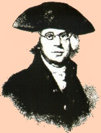

|
Sixty-six year old Abraham Yates, Jr. was appointed mayor of Albany by the New York State Council of Appointment on September 29, 1790. He held that office until his death on June 30, 1796. Although he did practice law, Yates was a career civil servant who previously had been an Albany constable, firemaster, assistant alderman, alderman, and recorder or deputy mayor. He also had been deputy secretary to the Commissioners for Indian Affairs, sheriff of Albany County, chairman or the Albany Committee of Correspondence, delegate to the New York Provincial Congress and New York State Convention, Albany postmaster, Continental Loan Officer, New York State Senator, delegate to the Continental Congress, and a member of numerous other committees and commissions. Because of the existence of a large body of his personal papers, the career of Abraham Yates, Jr. has been the subject of a number of scholarly publications over the past half century. The drama of his life raised the basic issues that led to the formation of the Colonial Albany Social History Project. The life of Abraham Yates, Jr. touched many parts of the early Albany story. The following items provide quick access to more information about him: Colonial Albany Project biography of Abraham Yates, Jr. The World of Abraham Yates, Jr. twenty-fifth anniversary programming in 2000. "Abraham Yates, Jr.," biographical article published in American National Biography. Linked transcription of his journal and copybook. |